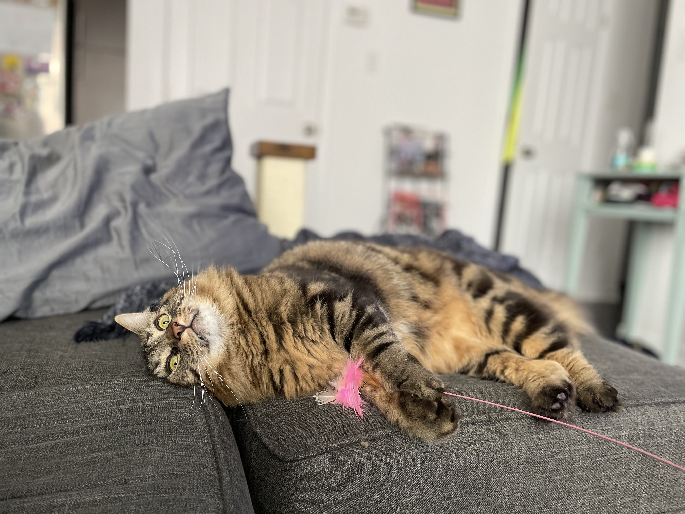

Tail of the Day
Waiting for API key...

Upload a photo of Beans
or click to browse
What we know about Beans
Loading...
Welcome. Upload a photo of Garbanzo Beans
or ask anything about him below.

Upload a photo of Beans
or click to browse
Welcome. Upload a photo of Garbanzo Beans
or ask anything about him below.